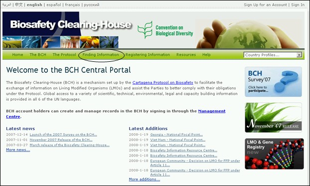
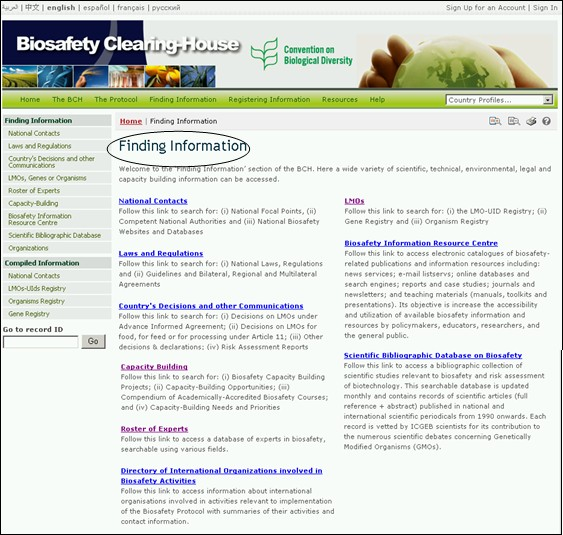

عنوان الموقع على الشبكة: http://bch.cbd.int/database/
أنشئت غرفة تبادل معلومات السلامة الأحيائية بمقتضى المادة 20، لتيسير تبادل المعلومات بشأن الكائنات الحية المحوَّرة وقد أُدرجت في هذه المادة المتطلبات المتعلقة بأنواع المعلومات، وتحتفظ غرفة تبادل معلومات السلامة الأحيائية بقواعد بيانات مع البيانات ذات الصلة. وتُعرض سُبل الوصول إلى هذه المعلومات من خلال صفحة إيجاد المعلومات في الموقع الشبكي لغرفة التبادل (BCH) التي يمكن العثور عليها من خلال وصلة على شريط التصفح (navigation bar) في صفحة الاستقبال الخاصة بالبوابة المركزية لغرفة تبادل معلومات السلامة الأحيائية. ومرحباً إلى البوابة المركزية لغرفة التبادل BCH.

صورة 1

صورة 2
ويسمح هذا القسم للمستعملين بالنفاذ إلى قواعد بيانات غرفة تبادل معلومات السلامة الأحيائية للاطلاع على طائفة متنوعة عريضة من المعلومات العلمية والتقنية والبيئية والقانونية والمعلومات بشأن بناء القدرات. وفئات المعلومات مُدرجة في صفحة إيجاد المعلومات.
ويمكن الوصول إلى مختلف فئات المعلومات من الوصلة الموجودة في قائمة الاختيارات إلى اليسار أو من وصلات في النص على صفحة إيجاد المعلومات. وهذا النموذج سيبحث في كل فئة من هذه الفئات ويقدم توجيهات ترشد إلى كيفية الوصول إلى معلومات محددة من كل قاعدة من قواعد البيانات.